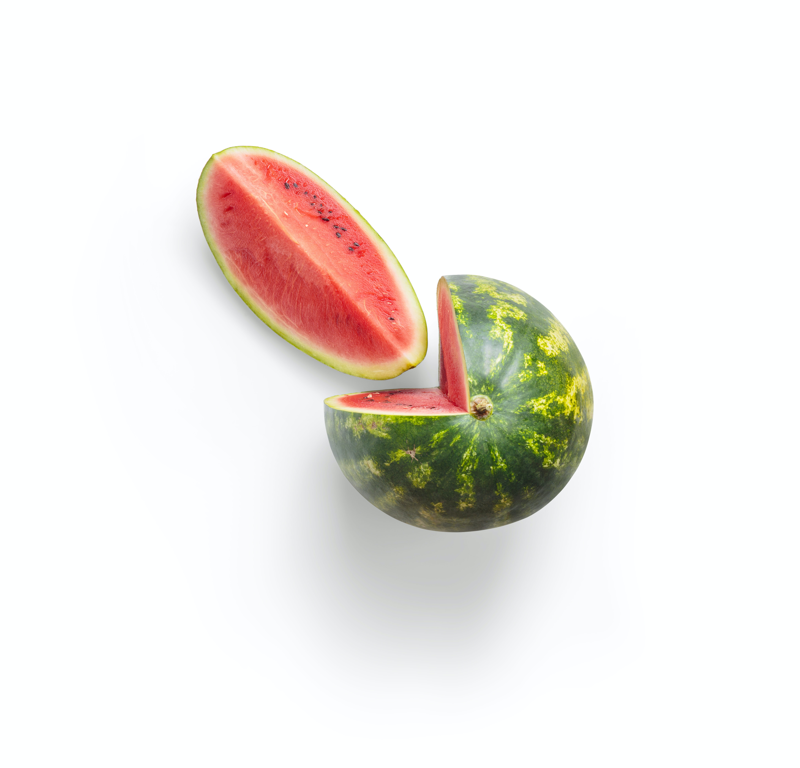

- 수박
- 수박 자르는 방법
- 수박 맛있게 먹는 방법
수박
수박(영어: watermelon)은 남아프리카 원산의 한해살이 덩굴식물, 또는 그 열매를 말한다. 서과(西瓜) 또는 수과(水瓜)라고도 한다. 열매의 속살은 식용하는데, 붉거나 노란색을 띠며 달다.

생태
덩굴에는 거친 털이 있으며 단면은 마름모꼴로 길이는 7m 정도이다. 잎은 어긋나며 긴 심장꼴이고 깃모양으로 3-4개로 깊게 갈라진다.
잎겨드랑이에서 덩굴손이 나와 물체에 휘감긴다. 꽃은 잎겨드랑이에 1개씩 달리고, 노랑으로 지름 3.5cm이며, 꽃부리는 5개로 갈라진다.
암수한그루이며 5 ~ 10마디마다 암꽃이 달리며, 수꽃은 품종에 따라 양성화가 달린다. 열매는 개화 후 약 30일이면 익는다.
열매는 400 ~ 1700개, 보통 700개 정도의 종자가 있다.
종자는 납작한 달걀꼴이나 긴 타원형이고 씨앗 껍질 색은 검정·회색·갈색으로 여러 가지이며, 크기도 품종에 따라 다양하다.
씨없는 수박
종자가 없으면 먹기 쉬울 것이라는 발상에서 씨없는 수박의 연구가 이루어졌다. 보통의 2배체 수박의 발아한 눈에 콜히친을 작용시키면 4배체의 수박이 생긴다.
이 4배체의 꽃에 2배체의 화분(花粉)을 수분시키면 3배체의 종자가 생긴다. 이 종자는 불임성이며 열매가 열려도 종자가 생기지 않는다.